- Home ›
- 正規表現入門 ›
- 正規表現の色々な書き方
先読みと後読みを使ったパターン
正規表現ではパターンが対象の文字列とマッチするかどうかをチェックしますが、先読みや後読みでは文字列とマッチするかどうかは調べるけれどマッチした文字列としては取得しません。先読みと後読みでは利用方法に応じて、肯定先読み、否定先読み、肯定後読み、否定後読み、の 4 種類が利用できます。ここでは正規表現における先読みと後読みを使ったパターンの利用方法について解説します。
肯定先読み
最初に肯定先読みについて解説します。肯定先読みは次のように記述します。
(?=パターン)
単にパターンを記述した場合は対象の文字列がパターンとマッチするかどうかを調べ、マッチした場合はどの部分にマッチしたのかを取得したりしますが、肯定先読みの形式で記述した場合には対象の文字列がパターンとマッチするかどうかを調べる点は同じですが、パターンと部分文字列が一致した場合にその部分文字列とマッチするのではなく、部分文字列の先頭位置にマッチします。
実際のサンプルをみながらもう少し詳しく解説します。
パターン ： Word(?=Press) 文字列 ： WordPress
最初に対象の文字列の先頭から「Word」とマッチする部分を探します。
次に先ほどマッチした部分の次の文字から「Press」とマッチするかどうかを調べます。マッチした場合、肯定先読みの場合はマッチしたことだけを確認し、実際にはマッチした文字列の先頭の位置とマッチします。
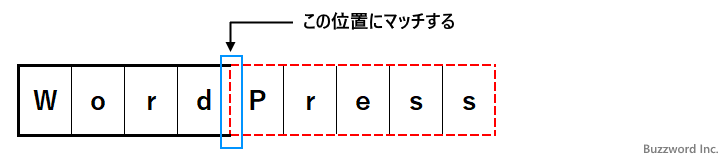
結果的にこの文字列はパターンとマッチし、マッチした部分は「Word」という結果になります。
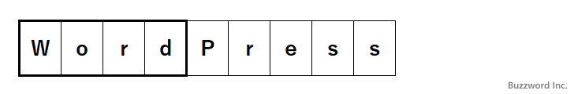
このように肯定先読みのパターンでは、マッチするかどうかは調べるけれどマッチした文字列としては取得しません。今回のサンプルで言えば、マッチした結果として取得するのは「Word」で、「WordPress」にはマッチするけれど「WordBook」や「WordAge」にはマッチしません。
const regex = /Word(?=Press)/;
regex.test('WordBook');
--> false
regex.test('WordPress');
--> true
let result = regex.exec('WordPress');
console.log(result[0]);
--> Word
-- --
もう一つサンプルを見てください。
パターン ： (?=WordPress)Word 文字列 ： WordPress
最初に対象の文字列の先頭から「WordPress」とマッチする部分を探します。マッチした場合、肯定先読みの場合はマッチしたことだけを確認し、実際にはマッチした文字列の先頭の位置とマッチします。
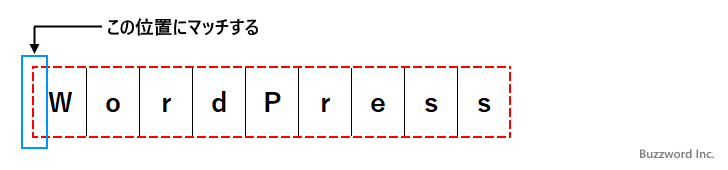
次に先ほどマッチした部分の次の文字から「Word」とマッチするかどうかをチェックします。
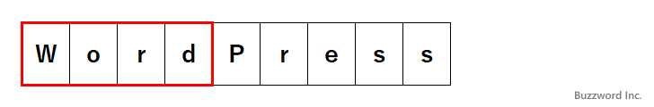
結果的にこの文字列はパターンとマッチし、マッチした部分は「Word」という結果になります。
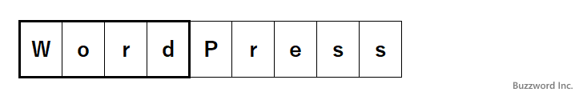
このように肯定先読みのあとに別のパターンがを記述した場合は、肯定先読みのパターンと位置するかどうかを先に確認したあと、あらためて同じ位置からパターンとマッチするかどうかをチェックすることになります。今回のサンプルでは、マッチした結果として取得するのは「Word」で、前のサンプルと同じく「WordPress」にはマッチするけれど「WordBook」や「WordAge」にはマッチしません。
const regex = /(?=WordPress)Word/;
regex.test('WordBook');
--> false
regex.test('WordPress');
--> true
let result = regex.exec('WordPress');
console.log(result[0]);
--> Word
肯定先読みがどのようなときに利用できるのか
具体的に肯定先読みができるとどのようなことができるのかについてですが、例えば少なくとも一文字は大文字のアルファベットが含まれる 5 文字の文字列、といったパターンを作成することができます。
(?=.*[A-Z]).{5}
肯定先読みのパターンで、文字列の先頭から任意の文字が続いたあっとに大文字のアルファベットと一致するかどうかを先に調べ、マッチした場合に改めて文字列の先頭から任意の文字が5文字続く文字列とマッチします。
const regex = /(?=.*[A-Z]).{5}/;
regex.test('happy');
--> false
regex.test('Happy');
--> true
regex.test('drINk');
--> true
否定先読み
続いて否定先読みについて解説します。否定先読みは次のように記述します。
(?!パターン)
否定先読みは肯定先読みと逆で、否定先読みの中で記述したパターンに一致しない場合にマッチします。
実際のサンプルをみながらもう少し詳しく解説します。
パターン ： Word(?!Book) 文字列 ： WordPress
最初に対象の文字列の先頭から「Word」とマッチする部分を探します。
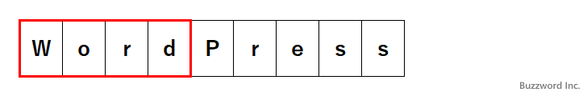
次に先ほどマッチした部分の次の文字から「Book」とマッチするかどうかを調べます。否定先読みの場合はパターンと一致しない場合にマッチします。マッチした場合、否定先読みの場合はマッチしたことだけを確認し、実際にはマッチした文字列の先頭の位置とマッチします。
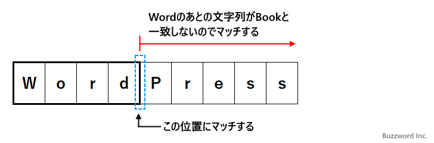
結果的にこの文字列はパターンとマッチし、マッチした部分は「Word」という結果になります。
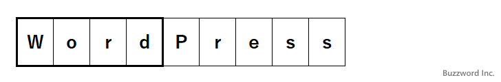
今回のサンプルで言えば、マッチした結果として取得するのは「Word」で、「WordPress」や「WordAge」にはマッチするけれど「WordBook」にはマッチしません。
肯定後読み
続いて肯定後読みについて解説します。肯定後読みは次のように記述します。
(?<=パターン)
肯定後読みの形式で記述した場合には対象の文字列がパターンとマッチするかどうかを調べる点は同じですが、パターンと部分文字列が一致した場合にその部分文字列とマッチするのではなく、部分文字列の末尾位置にマッチします。
実際のサンプルをみながらもう少し詳しく解説します。
パターン ： (?<=pe)Script 文字列 ： TypeScript
最初に対象の文字列の先頭から順に位置を右にずらしながら、左側の文字が「pe」とマッチするか調べます。マッチした場合、肯定後読みの場合はマッチしたことだけを確認し、実際にはマッチが成功した位置とマッチします。
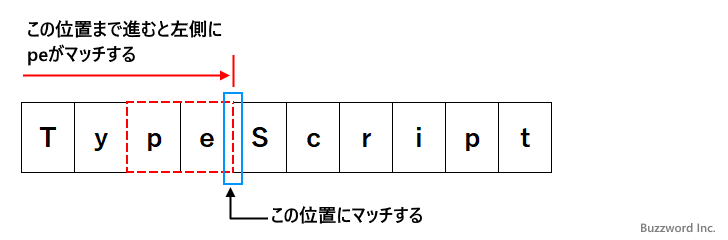
次に先ほどマッチした部分の次の文字から「Script」とマッチするかどうかをチェックします。
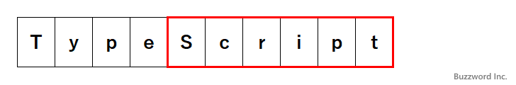
結果的にこの文字列はパターンとマッチし、マッチした部分は「Script」という結果になります。
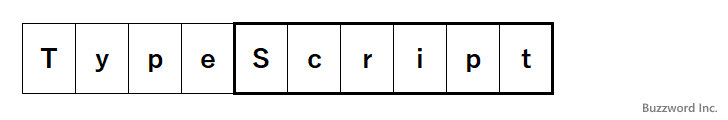
このように肯定後読みのパターンでは、マッチするかどうかは調べるけれどマッチした文字列としては取得しません。今回のサンプルで言えば、マッチした結果として取得するのは「Script」で、「TypeScript」にはマッチするけれど「JavaScript」や「PostScript」にはマッチしません。
const regex = /(?<=pe)Script/;
regex.test('JavaScript');
--> false
regex.test('TypeScript');
--> true
let result = regex.exec('TypeScript');
console.log(result[0]);
--> Script
否定後読み
続いて否定後読みについて解説します。否定後読みは次のように記述します。
(?<!パターン)
否定後読みは否定先読みと逆で、否定後読みの中で記述したパターンに一致しない場合にマッチします。
実際のサンプルをみながらもう少し詳しく解説します。
パターン ： (?<!va)Script 文字列 ： TypeScript
最初に対象の文字列の先頭から順に位置を右にずらしながら、左側の文字が「va」とマッチするか調べます。否定後読みの場合はパターンと一致しない場合にマッチします。マッチした場合、否定後読みの場合はマッチしたことだけを確認し、実際にはマッチが成功した位置とマッチします。
最初の位置がまず否定後読みのパターンと一致しないのでマッチします。
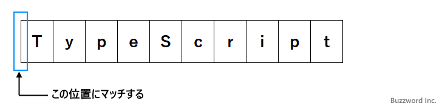
次に先ほどマッチした部分の次の文字から「Script」とマッチするかどうかをチェックします。今回の場合はマッチしません。マッチしなかった場合は、一つ前に戻り位置を右にずらしながら、左側の文字が「va」と一致せずに次の文字が「Script」と一致するところまで進んでいきます。今回は次の位置に来た時にマッチしました。
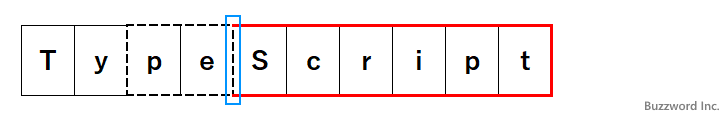
結果的にこの文字列はパターンとマッチし、マッチした部分は「Script」という結果になります。
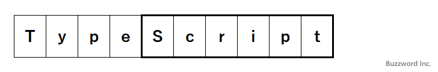
今回のサンプルで言えば、マッチした結果として取得するのは「Script」で、「JavaScript」や「PostScrript」にはマッチするけれど「TypeScript」にはマッチしません。
-- --
正規表現における先読みと後読みを使ったパターンの利用方法について解説しました。
( Written by Tatsuo Ikura )

著者 / TATSUO IKURA
初心者～中級者の方を対象としたプログラミング方法や開発環境の構築の解説を行うサイトの運営を行っています。